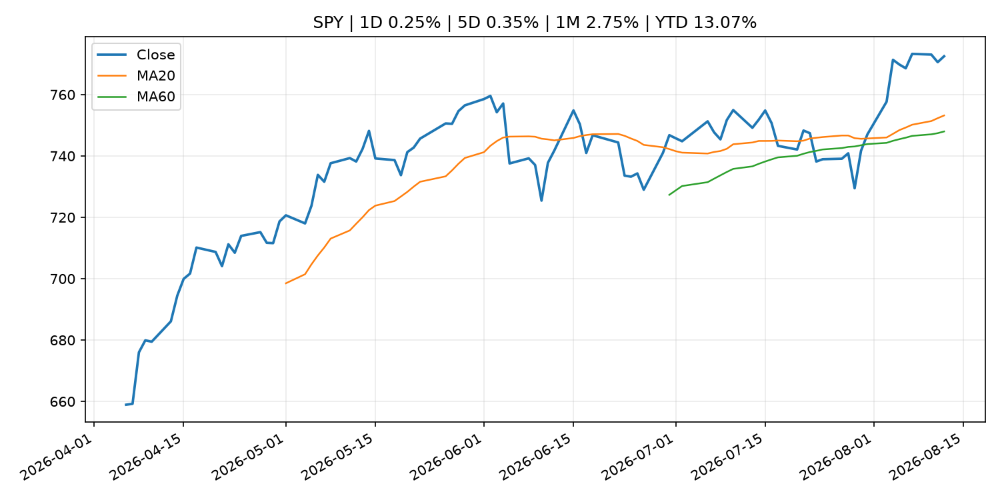
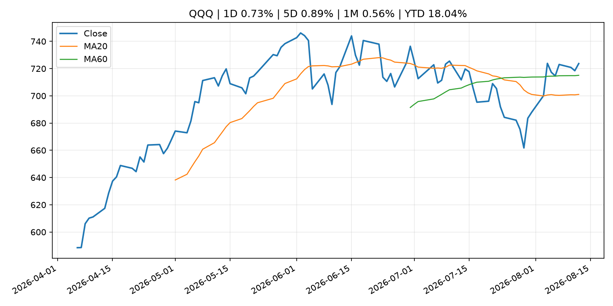
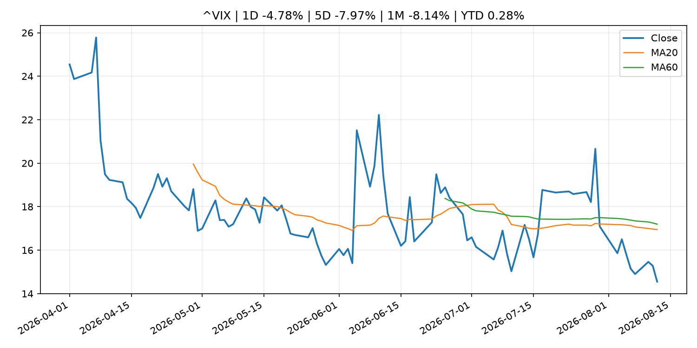
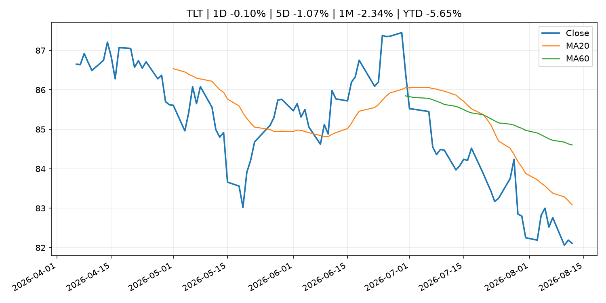
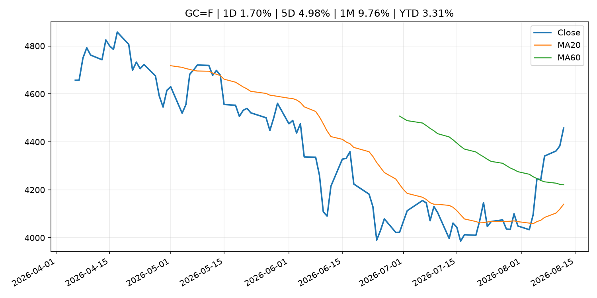
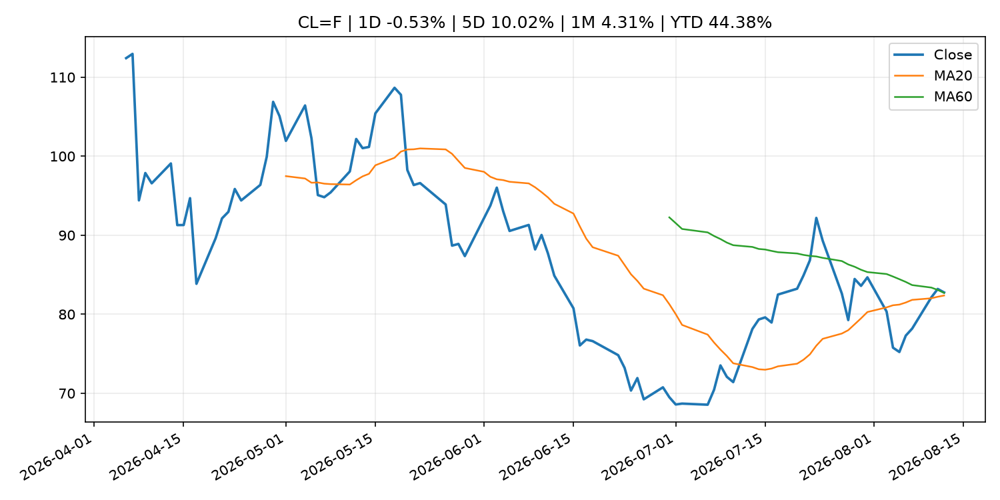
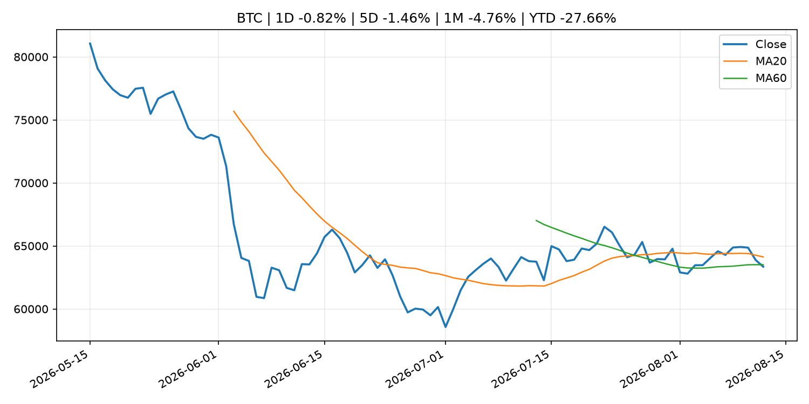
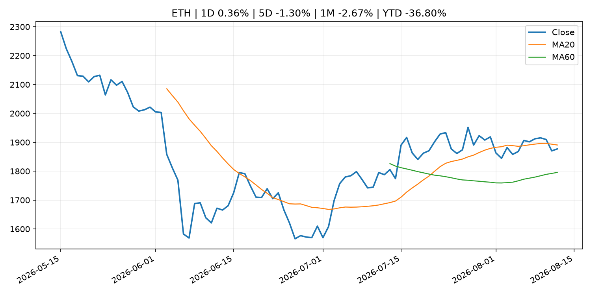
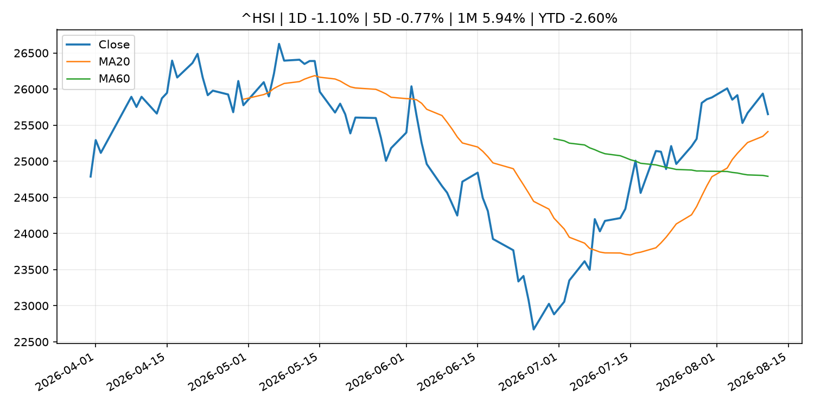

Global Macro Morning Briefing - 2026-08-13
Not financial advice / 非投资建议。
0. 今日总览
- 市场状态：unknown。市场信号不足，暂不判断明确状态。
- 今日三大主线：
- macro_data: U.S. CPI inflation slows to 3.4% as expected, bitcoin holds near $64,000
- macro_data: XRP trading could get spicy after CPI report as futures bets hit highest since October
- macro_data: Here's what bitcoin and ether traders are doing ahead of the binary U.S. CPI print
- 一句话结论：今日晨报重点关注：这类宏观数据会直接改变市场对通胀、增长和政策路径的预期。；这类宏观数据会直接改变市场对通胀、增长和政策路径的预期。。跨资产方面，SPY 1D 0.25%；QQQ 1D 0.73%；^VIX 1D -4.78%；TLT 1D -0.10%；GC=F 1D 1.70%；CL=F 1D -0.53%；BTC 1D -0.82%；ETH 1D 0.36%；市场信号不足，暂不判断明确状态。政策、通胀、利率、美元、美债、能源和加密监管仍是主要观察线索。所有结论仅基于公开数据与短摘要整理，不构成投资建议。
1. 隔夜跨资产市场
- 美股：SPY 1D 0.25%，QQQ 1D 0.73%，整体趋势需结合 VIX 和利率确认。
- 美债/美元：TLT 1D -0.10%，美元指数 1D 0.17%，是判断折现率压力的核心线索。
- 黄金/原油：黄金 1D 1.70%，原油 1D -0.53%，用于观察避险、通胀和地缘风险。
- 加密：BTC 1D -0.82%，ETH 1D 0.36%，关注是否独立于纳指走出加密自身行情。
- 港股/A股：恒生 1D -1.10%，沪深300/上证 1D n/a，重点看中国政策预期与人民币线索。
- 风险观察：关注后续数据是否确认当前跨资产信号。
US_EQUITY
| symbol | latest close | 1D | 5D | 1M | YTD | trend |
|---|---|---|---|---|---|---|
| SPY | 772.49 | 0.25% | 0.35% | 2.75% | 13.07% | uptrend |
| QQQ | 723.70 | 0.73% | 0.89% | 0.56% | 18.04% | range_bound |
| DIA | 537.15 | -0.02% | -1.04% | 2.37% | 11.07% | uptrend |
| IWM | 302.71 | 0.57% | 0.98% | 2.78% | 21.68% | uptrend |
| VTI | 381.83 | 0.31% | 0.57% | 2.87% | 13.54% | uptrend |
US_MACRO_MARKET
| symbol | latest close | 1D | 5D | 1M | YTD | trend |
|---|---|---|---|---|---|---|
| ^VIX | 14.55 | -4.78% | -7.97% | -8.14% | 0.28% | strong_downtrend |
| DX-Y.NYB | 99.99 | 0.17% | 0.30% | -0.95% | 1.59% | range_bound |
| TLT | 82.11 | -0.10% | -1.07% | -2.34% | -5.65% | downtrend |
| IEF | 92.96 | 0.10% | -0.38% | -0.35% | -3.25% | downtrend |
COMMODITIES
| symbol | latest close | 1D | 5D | 1M | YTD | trend |
|---|---|---|---|---|---|---|
| GC=F | 4,457.40 | 1.70% | 4.98% | 9.76% | 3.31% | range_bound |
| SI=F | 65.26 | 0.77% | 5.10% | 11.05% | -7.50% | range_bound |
| CL=F | 82.76 | -0.53% | 10.02% | 4.31% | 44.38% | range_bound |
| BZ=F | 88.58 | -0.37% | 11.49% | 4.54% | 45.81% | uptrend |
| NG=F | 2.79 | 0.87% | 3.83% | -3.89% | -22.86% | range_bound |
| HG=F | 6.61 | -0.04% | -1.39% | 4.42% | 17.19% | strong_uptrend |
HK_MARKET
| symbol | latest close | 1D | 5D | 1M | YTD | trend |
|---|---|---|---|---|---|---|
| ^HSI | 25,652.82 | -1.10% | -0.77% | 5.94% | -2.60% | strong_uptrend |
| 0700.HK | 461.60 | -1.95% | -6.22% | 1.18% | -25.91% | range_bound |
| 9988.HK | 122.60 | -3.01% | -4.29% | 10.65% | -17.72% | strong_uptrend |
| 3690.HK | 91.65 | -1.50% | -1.50% | 15.72% | -12.38% | strong_uptrend |
| 1810.HK | 26.36 | -1.13% | -4.63% | 1.23% | -34.56% | range_bound |
| 1211.HK | 89.60 | -0.11% | -4.48% | 4.00% | -9.27% | range_bound |
CRYPTO
| symbol | latest close | 1D | 5D | 1M | YTD | trend |
|---|---|---|---|---|---|---|
| BTC | 63,352.07 | -0.82% | -1.46% | -4.76% | -27.66% | range_bound |
| ETH | 1,877.10 | 0.36% | -1.30% | -2.67% | -36.80% | range_bound |
| SOLANA | 75.44 | -0.58% | 3.81% | -3.39% | -39.42% | range_bound |
| BINANCECOIN | 609.81 | 1.86% | 2.92% | 6.32% | -29.31% | strong_uptrend |
| RIPPLE | 1.01 | -0.47% | -2.76% | -11.98% | -45.37% | strong_downtrend |
2. 今日最重要的 10 条新闻
1. U.S. CPI inflation slows to 3.4% as expected, bitcoin holds near $64,000
- 来源：CoinDesk
- 时间：2026-08-12T12:44:39+00:00
- 地区：global
- 事件类型：macro_data
- 重要性层级：Tier 1
- 一句话摘要：U.S. CPI inflation slows to 3.4% as expected, bitcoin holds near $64,000
- 为什么重要：这类宏观数据会直接改变市场对通胀、增长和政策路径的预期。
- 可能影响：主要影响 DXY，方向为 positive，强度 high；通胀压力可能推高政策利率预期并支撑美元。
- 资产：DXY 方向：positive 强度：high 原因：通胀压力可能推高政策利率预期并支撑美元。
- 资产：TLT 方向：negative 强度：high 原因：通胀上行通常推升收益率、压低长债价格。
- 资产：QQQ 方向：negative 强度：high 原因：更高利率对成长股估值折现率不利。
- 资产：SPY 方向：mixed 强度：medium 原因：名义增长可能支撑收入，但更高利率压制估值。
- 资产：GC=F 方向：mixed 强度：medium 原因：通胀对黄金是支撑，但实际利率上行会形成压力。
- 资产：BTC 方向：mixed 强度：medium 原因：抗通胀叙事和流动性收紧可能相互抵消。
- 原文链接：https://www.coindesk.com/markets/2026/08/12/u-s-cpi-inflation-edges-lower-to-3-4-as-expected
2. XRP trading could get spicy after CPI report as futures bets hit highest since October
- 来源：CoinDesk
- 时间：2026-08-12T11:15:00+00:00
- 地区：global
- 事件类型：macro_data
- 重要性层级：Tier 1
- 一句话摘要：XRP trading could get spicy after CPI report as futures bets hit highest since October
- 为什么重要：这类宏观数据会直接改变市场对通胀、增长和政策路径的预期。
- 可能影响：主要影响 DXY，方向为 positive，强度 high；通胀压力可能推高政策利率预期并支撑美元。
- 资产：DXY 方向：positive 强度：high 原因：通胀压力可能推高政策利率预期并支撑美元。
- 资产：TLT 方向：negative 强度：high 原因：通胀上行通常推升收益率、压低长债价格。
- 资产：QQQ 方向：negative 强度：high 原因：更高利率对成长股估值折现率不利。
- 资产：SPY 方向：mixed 强度：medium 原因：名义增长可能支撑收入，但更高利率压制估值。
- 资产：GC=F 方向：mixed 强度：medium 原因：通胀对黄金是支撑，但实际利率上行会形成压力。
- 资产：BTC 方向：mixed 强度：medium 原因：抗通胀叙事和流动性收紧可能相互抵消。
- 原文链接：https://www.coindesk.com/daybook-us/2026/08/12/xrp-trading-could-get-spicy-after-cpi-report-as-futures-bets-hit-highest-since-october
3. Here's what bitcoin and ether traders are doing ahead of the binary U.S. CPI print
- 来源：CoinDesk
- 时间：2026-08-12T05:26:55+00:00
- 地区：global
- 事件类型：macro_data
- 重要性层级：Tier 1
- 一句话摘要：Here's what bitcoin and ether traders are doing ahead of the binary U.S. CPI print
- 为什么重要：这类宏观数据会直接改变市场对通胀、增长和政策路径的预期。
- 可能影响：主要影响 DXY，方向为 positive，强度 high；通胀压力可能推高政策利率预期并支撑美元。
- 资产：DXY 方向：positive 强度：high 原因：通胀压力可能推高政策利率预期并支撑美元。
- 资产：TLT 方向：negative 强度：high 原因：通胀上行通常推升收益率、压低长债价格。
- 资产：QQQ 方向：negative 强度：high 原因：更高利率对成长股估值折现率不利。
- 资产：SPY 方向：mixed 强度：medium 原因：名义增长可能支撑收入，但更高利率压制估值。
- 资产：GC=F 方向：mixed 强度：medium 原因：通胀对黄金是支撑，但实际利率上行会形成压力。
- 资产：BTC 方向：mixed 强度：medium 原因：抗通胀叙事和流动性收紧可能相互抵消。
- 原文链接：https://www.coindesk.com/business/2026/08/12/here-s-what-bitcoin-and-ether-traders-are-doing-ahead-of-the-binary-u-s-cpi-print
4. (Research Paper) Market Operations in Fiscal 2025
- 来源：Bank of Japan Announcements
- 时间：2026-08-12T16:00:00+09:00
- 地区：Japan
- 事件类型：fiscal_policy
- 重要性层级：Tier 1
- 一句话摘要：(Research Paper) Market Operations in Fiscal 2025
- 为什么重要：财政和贸易政策会影响增长、通胀、企业利润和跨境资本流。
- 可能影响：可能影响利率、汇率、风险资产或大宗商品预期，但当前公开信息不足以判断明确方向。
- 资产：暂无明确资产映射
- 方向：unknown
- 强度：low
- 原因：公开信息不足以判断方向。
- 原文链接：http://www.boj.or.jp/en/research/brp/mor/mor260812.htm
5. Standard Chartered-led Anchorpoint launches Hong Kong dollar stablecoin
- 来源：CoinDesk
- 时间：2026-08-12T13:13:49+00:00
- 地区：global
- 事件类型：crypto_market_structure
- 重要性层级：Tier 2
- 一句话摘要：Standard Chartered-led Anchorpoint launches Hong Kong dollar stablecoin
- 为什么重要：加密市场结构和监管变化会影响 BTC、ETH 及相关股票的风险溢价。
- 可能影响：主要影响 BTC，方向为 mixed，强度 high；加密监管或 ETF 进展会改变 BTC 的资金流和风险溢价。
- 资产：BTC 方向：mixed 强度：high 原因：加密监管或 ETF 进展会改变 BTC 的资金流和风险溢价。
- 资产：ETH 方向：mixed 强度：high 原因：监管框架会影响 ETH 产品化和机构参与度。
- 资产：COIN 方向：mixed 强度：medium 原因：监管清晰度和执法风险会影响交易平台估值。
- 资产：crypto market 方向：mixed 强度：high 原因：信息影响整个加密市场结构，但方向取决于细节。
- 原文链接：https://www.coindesk.com/business/2026/08/12/standard-chartered-led-anchorpoint-launches-hong-kong-dollar-stablecoin
6. Bank of England to test stablecoin, digital currency use in cross-border finance
- 来源：CoinDesk
- 时间：2026-08-12T10:17:05+00:00
- 地区：global
- 事件类型：crypto_market_structure
- 重要性层级：Tier 2
- 一句话摘要：Bank of England to test stablecoin, digital currency use in cross-border finance
- 为什么重要：加密市场结构和监管变化会影响 BTC、ETH 及相关股票的风险溢价。
- 可能影响：主要影响 BTC，方向为 mixed，强度 high；加密监管或 ETF 进展会改变 BTC 的资金流和风险溢价。
- 资产：BTC 方向：mixed 强度：high 原因：加密监管或 ETF 进展会改变 BTC 的资金流和风险溢价。
- 资产：ETH 方向：mixed 强度：high 原因：监管框架会影响 ETH 产品化和机构参与度。
- 资产：COIN 方向：mixed 强度：medium 原因：监管清晰度和执法风险会影响交易平台估值。
- 资产：crypto market 方向：mixed 强度：high 原因：信息影响整个加密市场结构，但方向取决于细节。
- 原文链接：https://www.coindesk.com/business/2026/08/12/bank-of-england-to-test-stablecoin-digital-currency-use-in-cross-border-finance
7. Nebius adds to the excitement around neocloud stocks with upbeat earnings of its own
- 来源：MarketWatch Top Stories
- 时间：2026-08-12T22:34:00+00:00
- 地区：US
- 事件类型：earnings
- 重要性层级：Tier 2
- 一句话摘要：Investors are reacting positively to earnings results and demand signals from neocloud companies CoreWeave and Nebius.
- 为什么重要：大型科技股盈利和资本开支会影响纳指、半导体和 AI 交易主线。
- 可能影响：可能影响利率、汇率、风险资产或大宗商品预期，但当前公开信息不足以判断明确方向。
- 资产：暂无明确资产映射
- 方向：unknown
- 强度：low
- 原因：公开信息不足以判断方向。
- 原文链接：https://www.marketwatch.com/story/nebius-adds-to-the-excitement-around-neocloud-stocks-with-upbeat-earnings-of-its-own-cd2aa36e?mod=mw_rss_topstories
8. Lumentum’s stock surges, giving a further boost to the optical-networking trade
- 来源：MarketWatch Top Stories
- 时间：2026-08-12T22:31:00+00:00
- 地区：US
- 事件类型：earnings
- 重要性层级：Tier 2
- 一句话摘要：Excitement is building for Coherent’s earnings report after upbeat results from Lumentum.
- 为什么重要：大型科技股盈利和资本开支会影响纳指、半导体和 AI 交易主线。
- 可能影响：可能影响利率、汇率、风险资产或大宗商品预期，但当前公开信息不足以判断明确方向。
- 资产：暂无明确资产映射
- 方向：unknown
- 强度：low
- 原因：公开信息不足以判断方向。
- 原文链接：https://www.marketwatch.com/story/lumentums-stock-surges-giving-a-further-boost-to-the-optical-networking-trade-0ee46339?mod=mw_rss_topstories
9. Securitize falls 20% after earnings miss as tokenization revenue falls short
- 来源：CoinDesk
- 时间：2026-08-12T22:26:24+00:00
- 地区：global
- 事件类型：earnings
- 重要性层级：Tier 2
- 一句话摘要：Securitize falls 20% after earnings miss as tokenization revenue falls short
- 为什么重要：大型科技股盈利和资本开支会影响纳指、半导体和 AI 交易主线。
- 可能影响：可能影响利率、汇率、风险资产或大宗商品预期，但当前公开信息不足以判断明确方向。
- 资产：暂无明确资产映射
- 方向：unknown
- 强度：low
- 原因：公开信息不足以判断方向。
- 原文链接：https://www.coindesk.com/markets/2026/08/12/securitize-falls-20-after-earnings-miss-as-tokenization-revenue-falls-short
10. Bitcoin holds near $64,000 as U.S. inflation data looms, Harmony exploit rattles altcoins
- 来源：CoinDesk
- 时间：2026-08-12T10:30:10+00:00
- 地区：global
- 事件类型：other
- 重要性层级：Tier 3
- 一句话摘要：Bitcoin holds near $64,000 as U.S. inflation data looms, Harmony exploit rattles altcoins
- 为什么重要：这条信息暂未匹配到重大宏观、政策或市场事件，更适合作为背景跟踪。
- 可能影响：主要影响 DXY，方向为 positive，强度 high；通胀压力可能推高政策利率预期并支撑美元。
- 资产：DXY 方向：positive 强度：high 原因：通胀压力可能推高政策利率预期并支撑美元。
- 资产：TLT 方向：negative 强度：high 原因：通胀上行通常推升收益率、压低长债价格。
- 资产：QQQ 方向：negative 强度：high 原因：更高利率对成长股估值折现率不利。
- 资产：SPY 方向：mixed 强度：medium 原因：名义增长可能支撑收入，但更高利率压制估值。
- 资产：GC=F 方向：mixed 强度：medium 原因：通胀对黄金是支撑，但实际利率上行会形成压力。
- 资产：BTC 方向：mixed 强度：medium 原因：抗通胀叙事和流动性收紧可能相互抵消。
- 原文链接：https://www.coindesk.com/markets/2026/08/12/bitcoin-holds-near-usd64-000-as-u-s-inflation-data-looms-harmony-exploit-rattles-altcoins
3. 政策与央行观察
1. (Research Paper) Market Operations in Fiscal 2025
- 来源：Bank of Japan Announcements
- 时间：2026-08-12T16:00:00+09:00
- 地区：Japan
- 事件类型：fiscal_policy
- 重要性层级：Tier 1
- 一句话摘要：(Research Paper) Market Operations in Fiscal 2025
- 为什么重要：财政和贸易政策会影响增长、通胀、企业利润和跨境资本流。
- 可能影响：可能影响利率、汇率、风险资产或大宗商品预期，但当前公开信息不足以判断明确方向。
- 资产：暂无明确资产映射
- 方向：unknown
- 强度：low
- 原因：公开信息不足以判断方向。
- 原文链接：http://www.boj.or.jp/en/research/brp/mor/mor260812.htm
2. Standard Chartered-led Anchorpoint launches Hong Kong dollar stablecoin
- 来源：CoinDesk
- 时间：2026-08-12T13:13:49+00:00
- 地区：global
- 事件类型：crypto_market_structure
- 重要性层级：Tier 2
- 一句话摘要：Standard Chartered-led Anchorpoint launches Hong Kong dollar stablecoin
- 为什么重要：加密市场结构和监管变化会影响 BTC、ETH 及相关股票的风险溢价。
- 可能影响：主要影响 BTC，方向为 mixed，强度 high；加密监管或 ETF 进展会改变 BTC 的资金流和风险溢价。
- 资产：BTC 方向：mixed 强度：high 原因：加密监管或 ETF 进展会改变 BTC 的资金流和风险溢价。
- 资产：ETH 方向：mixed 强度：high 原因：监管框架会影响 ETH 产品化和机构参与度。
- 资产：COIN 方向：mixed 强度：medium 原因：监管清晰度和执法风险会影响交易平台估值。
- 资产：crypto market 方向：mixed 强度：high 原因：信息影响整个加密市场结构，但方向取决于细节。
- 原文链接：https://www.coindesk.com/business/2026/08/12/standard-chartered-led-anchorpoint-launches-hong-kong-dollar-stablecoin
3. Bank of England to test stablecoin, digital currency use in cross-border finance
- 来源：CoinDesk
- 时间：2026-08-12T10:17:05+00:00
- 地区：global
- 事件类型：crypto_market_structure
- 重要性层级：Tier 2
- 一句话摘要：Bank of England to test stablecoin, digital currency use in cross-border finance
- 为什么重要：加密市场结构和监管变化会影响 BTC、ETH 及相关股票的风险溢价。
- 可能影响：主要影响 BTC，方向为 mixed，强度 high；加密监管或 ETF 进展会改变 BTC 的资金流和风险溢价。
- 资产：BTC 方向：mixed 强度：high 原因：加密监管或 ETF 进展会改变 BTC 的资金流和风险溢价。
- 资产：ETH 方向：mixed 强度：high 原因：监管框架会影响 ETH 产品化和机构参与度。
- 资产：COIN 方向：mixed 强度：medium 原因：监管清晰度和执法风险会影响交易平台估值。
- 资产：crypto market 方向：mixed 强度：high 原因：信息影响整个加密市场结构，但方向取决于细节。
- 原文链接：https://www.coindesk.com/business/2026/08/12/bank-of-england-to-test-stablecoin-digital-currency-use-in-cross-border-finance
4. 市场异动与图表
- QQQ 上涨 0.73%
- VIX 下跌 -4.78%
- Gold 上涨 1.70%
SPY

QQQ

^VIX

TLT

GC=F

CL=F

BTC

ETH

^HSI

5. 华尔街与机构公开观点
- 暂无可靠公开观点。
6. 今日重点关注
- 经济数据：经济数据：暂无可靠公开日历数据；如配置经济日历源后可自动填充。
- 央行讲话：央行讲话：暂无可靠公开日历数据；重点跟踪 Fed、ECB、BoJ、PBOC 官网 RSS。
- 财报：财报：暂无可靠数据。
- 政策事件：政策事件：暂无可靠数据。
- 风险提醒：风险提醒：关注数据源失败项、突发地缘风险、利率和美元的二阶反应。
7. 英文金融表达与宏观概念
- inflation expectations：通胀预期，指家庭、企业或市场对未来通胀的预估。 例句：Inflation expectations can shape wage bargaining and bond yields.
- real yield：实际收益率，名义利率扣除通胀预期后的收益率。 例句：Gold often reacts more to real yields than nominal yields.
- market structure：市场结构，指交易、托管、清算、ETF、监管等制度安排。 例句：Crypto market structure rules can affect institutional participation.
- terminal rate：终端利率，市场预期本轮加息周期的最高政策利率。 例句：A higher terminal rate can pressure growth stocks.
- soft landing：软着陆，指通胀回落而经济避免明显衰退。 例句：Markets often rally when data support a soft landing.
- risk-off：避险模式，资金偏向美元、国债、黄金等防御资产。 例句：A geopolitical shock can push markets into risk-off mode.
8. 背景材料
- Can I claim 50% of my husband’s Social Security now — and switch to my higher benefit at 70?（MarketWatch Top Stories，other）：“I would like to offer a piece of advice for women who are or have been married.”
- Goldman’s latest deal underscores how ‘boomer candy’ ETFs are now big business on Wall Street（MarketWatch Top Stories，other）：Goldman Sachs announced Wednesday that it has agreed to buy Neos Investments, adding yet another ETF shop to its fast-growing asset-management business.
- Goldman Sachs leaps into bitcoin income ETFs with $2.25 billion NEOS buyout（CoinDesk，other）：Goldman Sachs leaps into bitcoin income ETFs with $2.25 billion NEOS buyout
- Miden bets on privacy stablecoins with introduction of USDCx（CoinDesk，other）：Miden bets on privacy stablecoins with introduction of USDCx
- America doesn’t need a second-class payments system（CoinDesk，other）：America doesn’t need a second-class payments system
- Russia moves to restrict retail crypto trading to bitcoin, ether and USDT（CoinDesk，other）：Russia moves to restrict retail crypto trading to bitcoin, ether and USDT
- Bitcoin holds near $64,000 as U.S. inflation data looms, Harmony exploit rattles altcoins（CoinDesk，other）：Bitcoin holds near $64,000 as U.S. inflation data looms, Harmony exploit rattles altcoins
- Fidelity moves to add staking, quarterly payouts to near $900 million ether ETF（CoinDesk，other）：Fidelity moves to add staking, quarterly payouts to near $900 million ether ETF
- One overlooked group has added $1.78 billion of selling pressure to bitcoin market（CoinDesk，other）：One overlooked group has added $1.78 billion of selling pressure to bitcoin market
- Live updates: AI stocks surge on Q2 beats, bitcoin falls below $64,000 as inflation hits estimates（CoinDesk，other）：Live updates: AI stocks surge on Q2 beats, bitcoin falls below $64,000 as inflation hits estimates
- (Research Paper) Linkages of Firm Spending Behavior through Supply Chains（Bank of Japan Announcements，research_publication）：(Research Paper) Linkages of Firm Spending Behavior through Supply Chains
- (Research Paper) Mapping Japan's Manufacturing Supply Chains Through Firm-to-Firm Transaction Data（Bank of Japan Announcements，research_publication）：(Research Paper) Mapping Japan's Manufacturing Supply Chains Through Firm-to-Firm Transaction Data
- Dogecoin and BNB lead majors higher as bitcoin slips near $63,700（CoinDesk，other）：Dogecoin and BNB lead majors higher as bitcoin slips near $63,700
- Money Stock (July)（Bank of Japan Announcements，other）：Money Stock (July)
- ECB and Frankfurt Radio Symphony invite the public to Europa Open Air concert on 20 August 2026（ECB Press Releases，other）：ECB and Frankfurt Radio Symphony invite the public to Europa Open Air concert on 20 August 2026
9. 数据源、失败项与免责声明
- 采集时间：2026-08-12T22:38:46
- 数据源：公开 RSS、Yahoo Finance、CoinGecko、AKShare、FRED、SEC data.sec.gov，以及用户自有 inputs/reports 文件。
- 合规说明：不绕过 WSJ、Bloomberg、FT、Reuters 等付费墙；对付费媒体只使用公开 RSS 标题、摘要、链接和发布时间。
- 免责声明：Not financial advice / 非投资建议。本项目仅供个人学习、研究和信息整理，不构成投资建议、交易建议或任何收益承诺。
- 失败或跳过的数据源：
- crypto data failed coin=dogecoin
- China market data failed symbol=上证指数: empty dataframe
- China market data failed symbol=深证成指: empty dataframe
- China market data failed symbol=创业板指: empty dataframe
- China market data failed symbol=沪深300: empty dataframe
- China market data failed symbol=中证500: empty dataframe
- China market data failed symbol=科创50: empty dataframe
- FRED_API_KEY not set; skipping FRED macro series
- SEC failed cik=0000320193
- SEC failed cik=0000789019
- SEC failed cik=0001045810
- SEC failed cik=0001318605
- SEC failed cik=0001577552